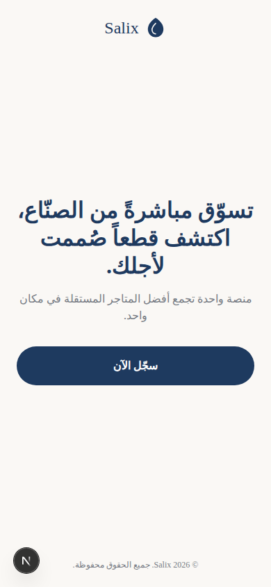
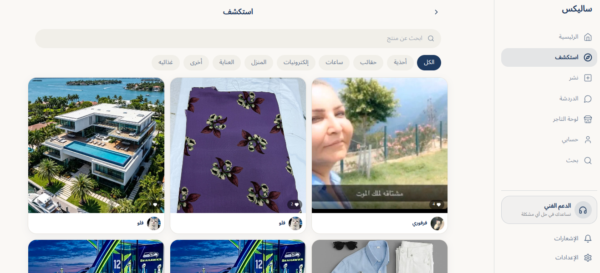
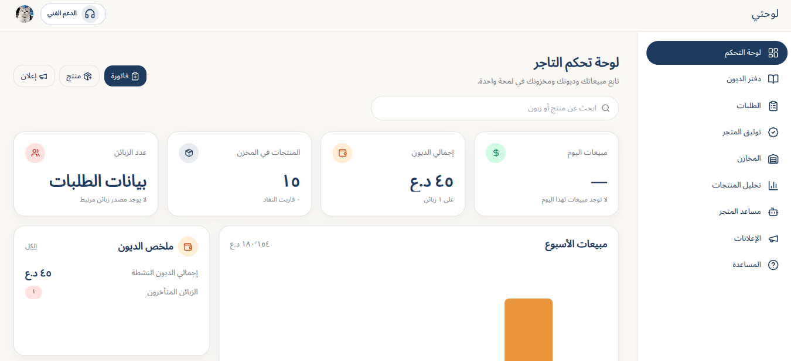
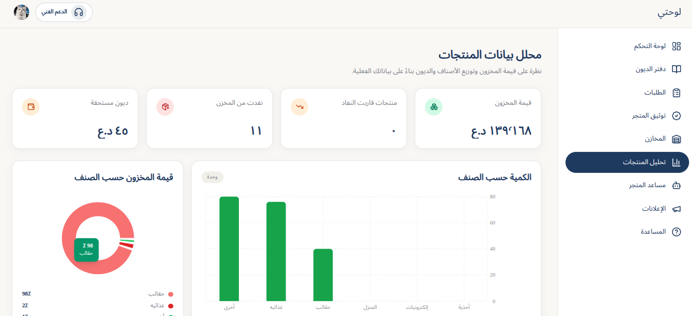

PRIVATE DEMO · REACT NATIVE + EXPO
Silex / Salix
أول تطبيق كامل بنيته بيدي: سوق اجتماعي عربي خاص يجمع اكتشاف المنتجات والمتاجر، الدردشة، القصص، المنشورات، الطلبات ومسارات التاجر ولوحة الإدارة. هذه نسخة تجريبية شغالة ومميزة، لم تُنشر بسبب عدم توفر موارد الدعم والتسويق، وتحتاج تطويرات لاحقة لتصبح منتجًا عامًا.
React NativeExpoArabic RTLPrivate demo

شاهد التطبيق أثناء التشغيل
تسجيل شاشة يوضح أن المشروع يتجاوز تصميم الواجهات إلى تجربة تطبيق متحركة قابلة للاستخدام.
فيديو تجريبي خاص بالمشروع · لا توجد قاعدة بيانات أو خدمة خارجية مطلوبة لعرض هذه الصفحة.
لقطات من الواجهات
مجموعة مختارة من تجربة المستخدم: الاستكشاف، المحادثات، الاتصال، لوحة التاجر وتحليل المنتجات.




ما الذي يوضحه المشروع؟
تطبيق كاملتجربة مترابطة تشمل واجهات المستخدم ومسارات التاجر ولوحة الإدارة.
تجربة عربيةاتجاه RTL وواجهات مصممة لتكون واضحة ومريحة للمستخدم العربي.
قابل للتطويرنسخة خاصة شغالة تحتاج إلى تطويرات وموارد نشر وتسويق قبل إطلاقها للعامة.